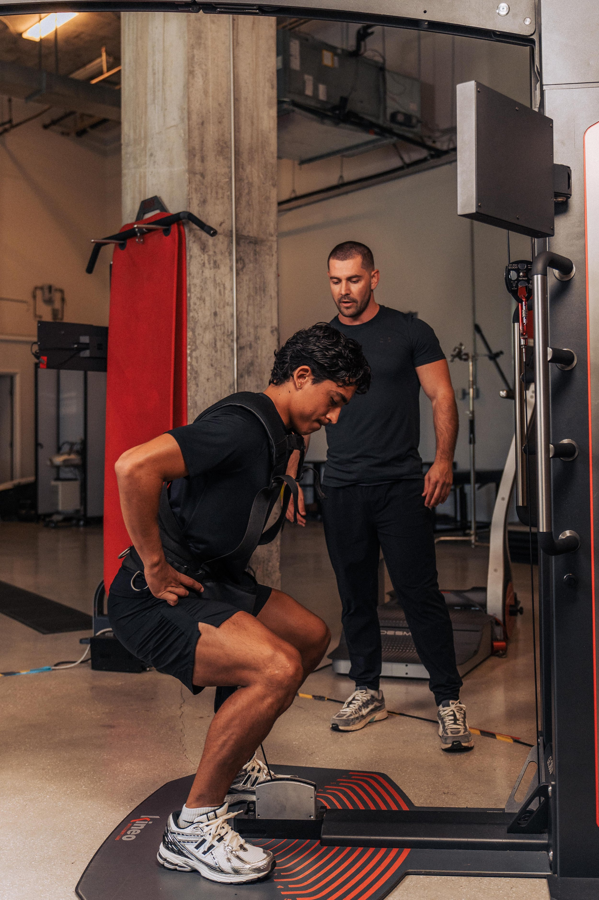
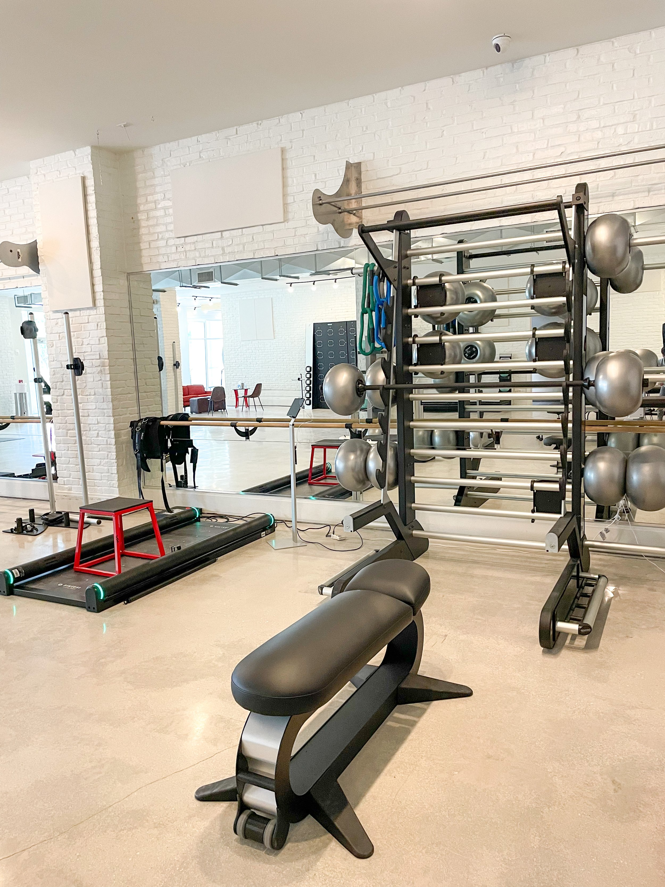
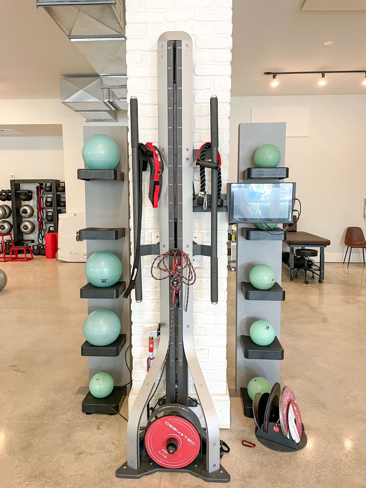
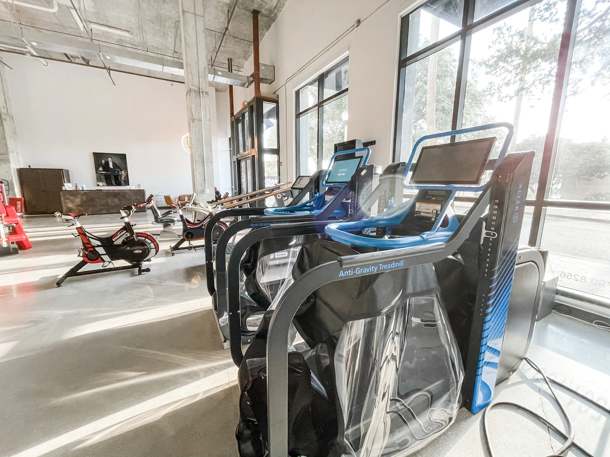
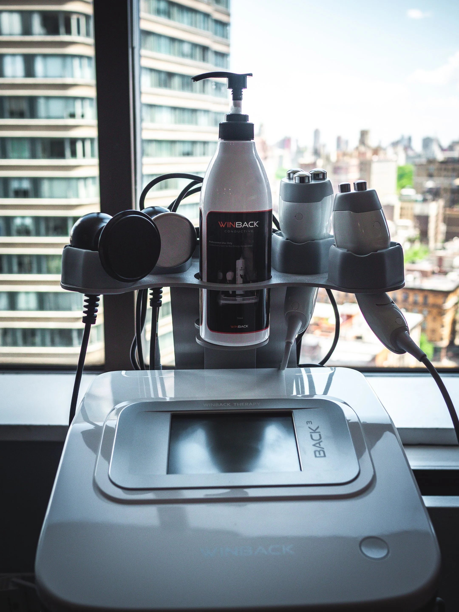
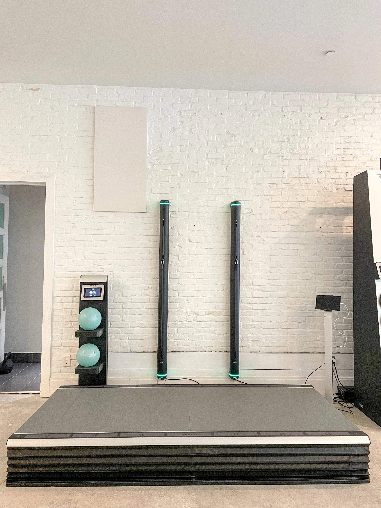
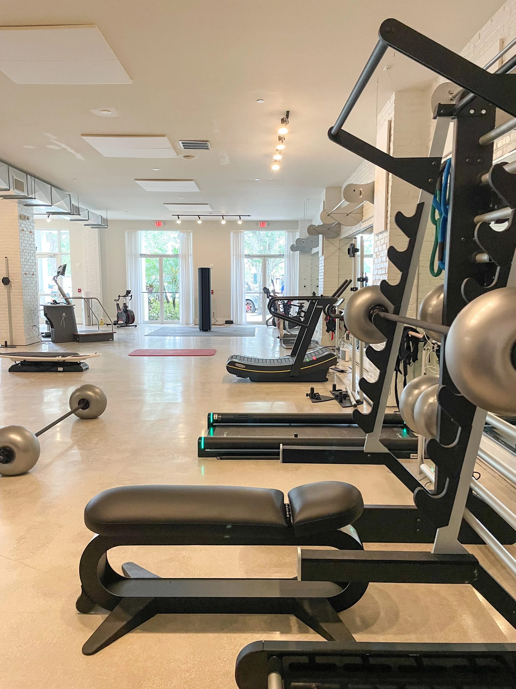

Progress proven by data. We combine world-class clinical expertise with the most advanced performance technology available to create a truly data-driven approach to human performance.
Book a Consultation →



For more than 30 years we've been redefining what training and rehabilitation should be. With premier studios in New York and Florida, we bridge the gap between physical therapy, sports performance, strength training, recovery, and longevity, all under one roof.
From your first visit onward, we measure the metrics that matter: force production, power output, body composition, VO₂ max, movement quality, balance, and mobility. Every session provides meaningful data that guides your program.
Explore Our Services →We don't just collect data. We translate it into clear insight, so you understand exactly what it means and how to reach your full potential.
Learn More About Us →Every service at Sloane Stecker is built on the same foundation: understanding what your body's data actually means. Anyone can measure. We interpret, turning every test and result into a clear, actionable plan built around what your body truly needs.

Orthopedic and sports injuries, post-surgical rehab, chronic pain, and neurological conditions, treated by clinicians who measure every step of your recovery.
Explore Physical TherapyDelivered by trainers and physical therapists working from the same playbook, so every rep is backed by a plan, not a guess.
Explore Personal TrainingNow offered at every Sloane Stecker location, the same technology our clinicians have brought courtside to professional athletes.
Explore TECAR
Built for the long game: testing protocols designed to track measurable progress at every visit, not just how you feel that day.
Explore AssessmentMobility and durability work led by a TPI Medical Certified specialist, built around your swing mechanics.
Explore Golf FitnessPlus Wattbike-powered cycling assessments, the same data-driven approach whether you're on two feet or two wheels.
Explore Running & CyclingUnlike traditional gyms or physical therapy clinics, our team integrates objective testing into nearly every stage of your program. Our physical therapists and performance specialists work side by side, sharing one set of data and one plan for your body.
Our clinicians have worked courtside and on the field with the Chicago Cubs, LA Dodgers, and Tampa Bay Rays, provided TECAR treatment at the Chicago Marathon, and include a TPI Medical Certified specialist for golf performance. That same standard is what every client gets, from day one.
Meet Us In Person →Three decades of combining rehabilitation, performance training, and technology under one roof.
The same principle guides every program: diagnose first, build second, track always.
Every client starts here. We sit down to understand your goals, injury history, and where you are today: an honest conversation about what's possible and how we can help.
Using lab-grade technology, we measure force production, power output, body composition, VO₂ max, movement quality, balance and mobility, pinpointing exactly what's holding you back.
Based on your results, your physical therapist or trainer builds a program designed entirely around your data, your goals, and your timeline.
We re-test, track your progress, and adjust your program as you evolve, so every milestone is measurable, not just felt.
Four premier studios across New York and Florida, every location built around the same data-driven approach.